Candidate List 20260917Last night — ZTF: 3,055 passed basic cuts (68 young) · LSST: 0 passed basic cuts (0 young)Previous Day Next Day
Section 1: New Sources (age<1d) Section 2: Old (1-5d) sources observed last nightplaceholder
Section 1: New Afterglow/FBOT Cands Last Night (0)
Section 2: Older Sources Observed Last Night (8)
0. [ZTF] ZTF26abtijze (FBOT?) [Back to Top] [Share] [Trigger Swift] [Fritz Alert] [Fritz Source] [Lasair]RA, Dec: 352.20664, 25.59287 23h28m49.59s, 25d35m34.33sGalactic (l, b): 100.46637, -33.64953 ext(g-r) = 0.07


TESS: Sectors [56 83]
PS1: 0 sources in 3 arcsec
LegacySurvey: 1 sources in 3 arcsec Closest: d = 0.54 arcsec, 124.0 deg (east of north) photoz=0.9 (68% bounds 0.72, 1.07), type=REX peak abs mag (ext. corrected) = -24.76 (68% bounds -24.18, -25.21)

Extinction-corrected gr color:
From alerts: -0.27 +/- 0.15 mag
Extinction-corrected gi color:
From alerts: -0.42 +/- 0.31 mag
Extinction-corrected ri color:
From alerts: -0.11 +/- 0.31 mag
Consistent with synchrotron, g-r>0!
Rise Rate:
g: 0.21 mag/day
r: 0.19 mag/day
Fade Rate:
1. [ZTF] ZTF26abttgxn (Afterglow?) [Back to Top] [Share] [Trigger Swift] [Fritz Alert] [Fritz Source] [Lasair]RA, Dec: 19.0427, 16.15181 1h16m10.25s, 16d 9m6.51sGalactic (l, b): 131.54506, -46.3059 ext(g-r) = 0.132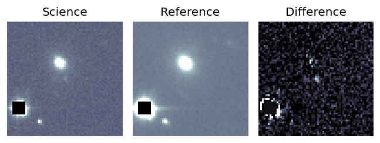
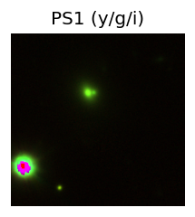
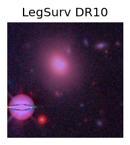
TESS: Sectors [17 42 43 57 70]
SDSS (<15 kpc):Found SDSS phot-z: z=0.08; peak abs mag = -19.13
PS1: 0 sources in 3 arcsec
LegacySurvey: 1 sources in 3 arcsec Closest: d = 9.21 arcsec, 11.3 deg (east of north) photoz=0.11 (68% bounds 0.09, 0.15), type=REX peak abs mag (ext. corrected) = -19.81 (68% bounds -19.4, -20.62)
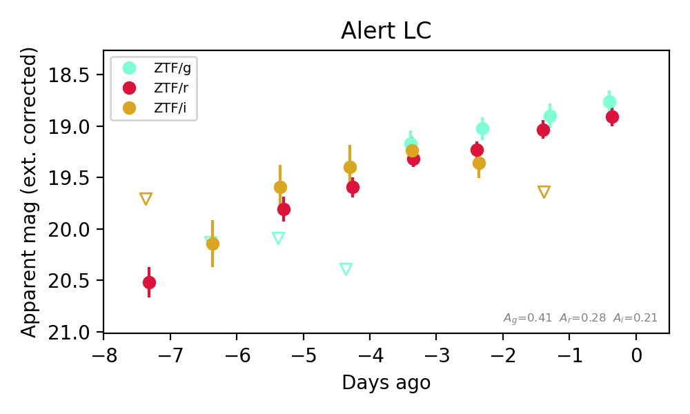
Extinction-corrected gr color:
From alerts: -0.14 +/- 0.15 mag
Extinction-corrected gi color:
From alerts: -0.74 +/- 99 mag
Extinction-corrected ri color:
From alerts: -0.61 +/- 99 mag
Consistent with synchrotron, g-r>0!
Rise Rate:
g: 1.25 mag/day
r: 0.21 mag/day
i: 0.17 mag/day
Fade Rate:
i: 0.2 mag/day
2. [ZTF] ZTF26abuogsf (FBOT?) [Back to Top] [Share] [Trigger Swift] [Fritz Alert] [Fritz Source] [Lasair]RA, Dec: 16.09552, -10.47671 1h 4m22.93s, -10d-28m-36.16sGalactic (l, b): 133.92183, -73.07167 ext(g-r) = 0.034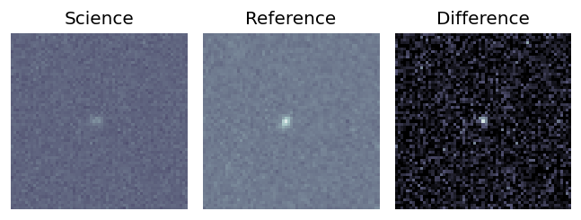
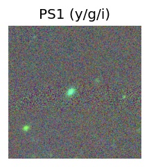
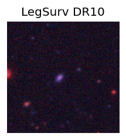
TESS: Sectors [30 97]
SDSS (<15 kpc):Found SDSS phot-z: z=0.15; peak abs mag = -19.44
PS1: 0 sources in 3 arcsec
LegacySurvey: 1 sources in 3 arcsec Closest: d = 2.27 arcsec, 101.5 deg (east of north) photoz=0.16 (68% bounds 0.14, 0.19), type=SER peak abs mag (ext. corrected) = -19.56 (68% bounds -19.19, -20.01)
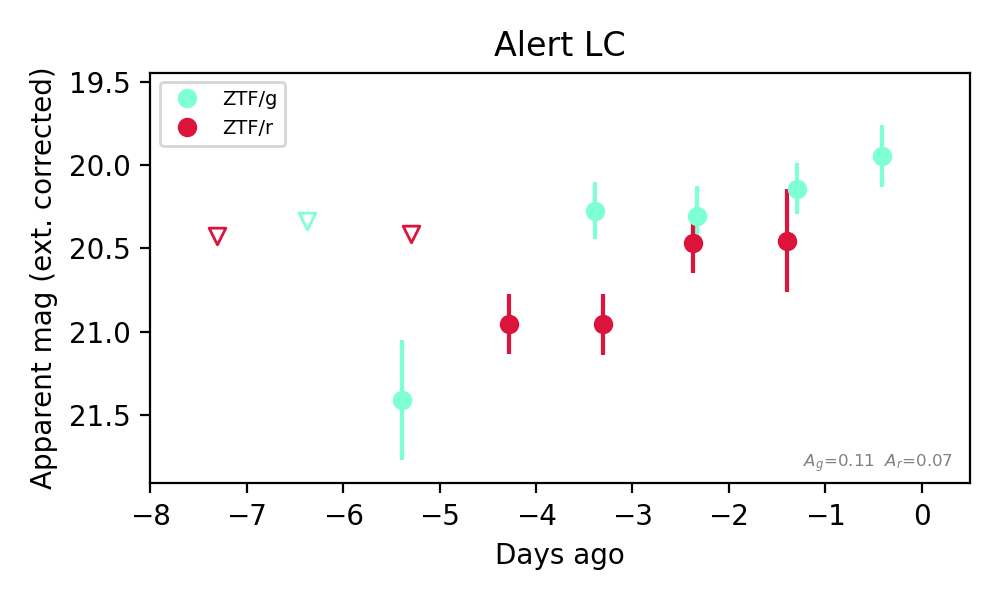
Extinction-corrected gr color:
From alerts: -0.31 +/- 0.34 mag
Consistent with synchrotron, g-r>0!
Rise Rate:
g: 0.2 mag/day
r: 0.22 mag/day
Fade Rate:
3. [ZTF] ZTF26abuktjp (Afterglow?) [Back to Top] [Share] [Trigger Swift] [Fritz Alert] [Fritz Source] [Lasair]RA, Dec: 312.71175, 64.34756 20h50m50.82s, 64d20m51.20sGalactic (l, b): 100.29855, 12.66549 ext(g-r) = 0.55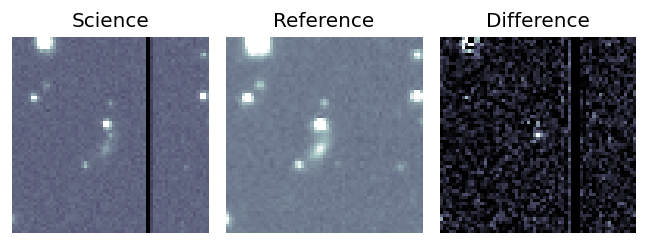
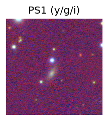

TESS: Sectors [ 15 17 18 24 56 57 58 76 77 78 83 84 85 121]
PS1: 1 source in 3 arcsec Closest: d = 3.55 arcsec photoz=0.04+/-0.03 peak abs mag = -19.15
LegacySurvey: 0 sources in 3 arcsec
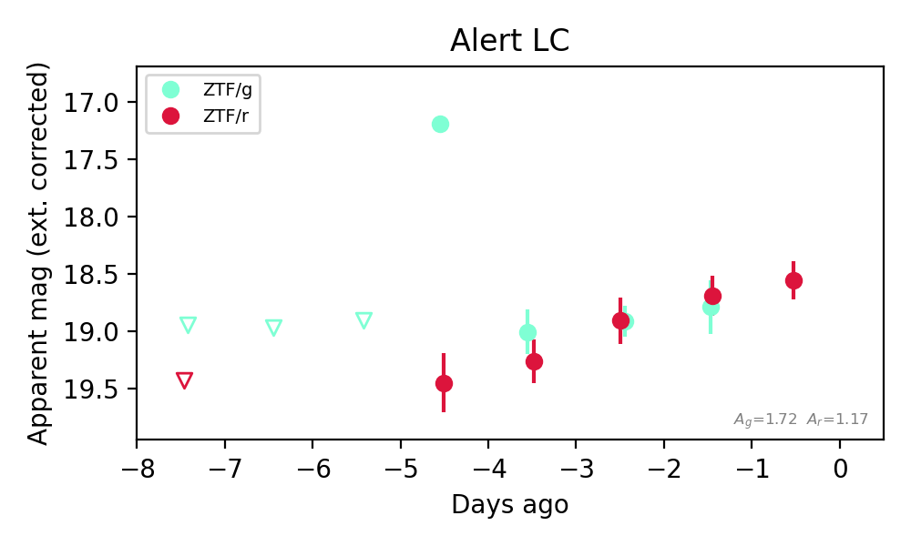
Extinction-corrected gr color:
From alerts: 0.1 +/- 0.29 mag
Consistent with synchrotron, g-r>0!
Rise Rate:
g: 1.97 mag/day
r: 0.24 mag/day
Fade Rate:
g: 0.75 mag/day
4. [ZTF] ZTF26abuxdll (Afterglow?) [Back to Top] [Share] [Trigger Swift] [Fritz Alert] [Fritz Source] [Lasair]RA, Dec: 294.36855, 41.01744 19h37m28.45s, 41d 1m2.78sGalactic (l, b): 74.37197, 9.51329 ext(g-r) = 0.182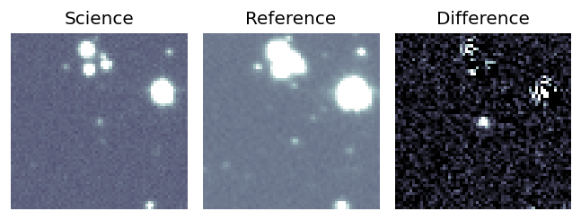
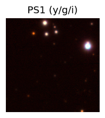

TESS: Sectors [ 14 15 40 41 54 55 74 75 81 82 119 120]
PS1: 0 sources in 3 arcsec
LegacySurvey: 0 sources in 3 arcsec
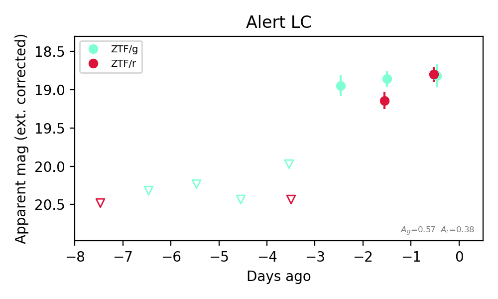
Extinction-corrected gr color:
From alerts: 0.01 +/- 0.17 mag
Consistent with synchrotron, g-r>0!
Rise Rate:
g: 0.95 mag/day
r: 0.66 mag/day
Fade Rate:
5. [ZTF] ZTF26abvdlgm (FBOT?) [Back to Top] [Share] [Trigger Swift] [Fritz Alert] [Fritz Source] [Lasair]RA, Dec: 298.32958, 0.3879 19h53m19.10s, 0d23m16.43sGalactic (l, b): 40.4769, -13.5503 ext(g-r) = 0.2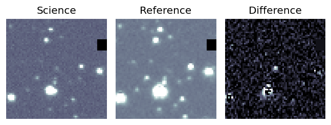
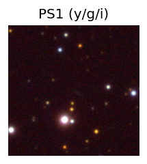

TESS: Sectors [54 81]
SDSS (<15 kpc):Found SDSS phot-z: z=0.18; peak abs mag = -20.26
PS1: 0 sources in 3 arcsec
LegacySurvey: 0 sources in 3 arcsec
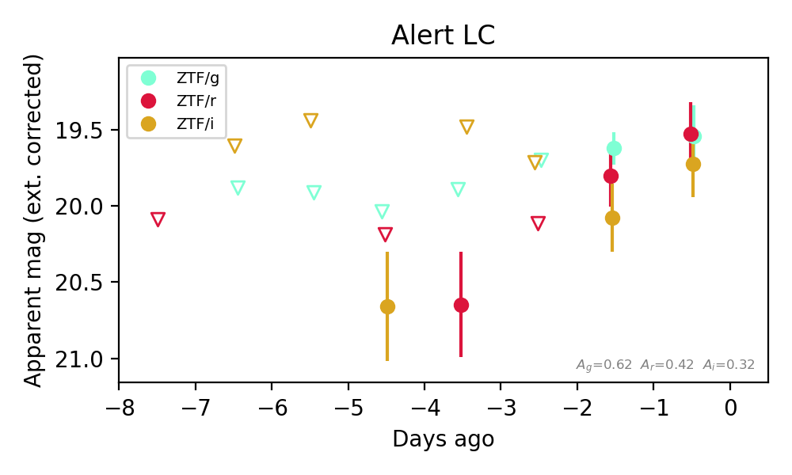
Extinction-corrected gr color:
From alerts: 0.02 +/- 0.29 mag
Extinction-corrected gi color:
From alerts: -0.18 +/- 0.3 mag
Extinction-corrected ri color:
From alerts: -0.2 +/- 0.3 mag
Consistent with synchrotron, g-r>0!
Rise Rate:
g: 0.14 mag/day
r: 0.37 mag/day
i: 0.23 mag/day
Fade Rate:
6. [ZTF] ZTF26abvfdbc (FBOT?) [Back to Top] [Share] [Trigger Swift] [Fritz Alert] [Fritz Source] [Lasair]RA, Dec: 352.82363, 1.48303 23h31m17.67s, 1d28m58.90sGalactic (l, b): 85.73552, -55.49161 WARNING: 4.21 deg from ecliptic plane ext(g-r) = 0.049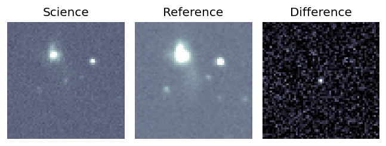
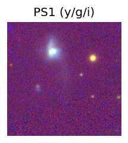
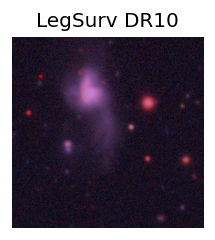
TESS: Sectors [42 70 92]
SDSS (<15 kpc):Found SDSS phot-z: z=0.46; peak abs mag = -22.03
PS1: 0 sources in 3 arcsec
LegacySurvey: 1 sources in 3 arcsec Closest: d = 0.75 arcsec, 253.3 deg (east of north) photoz=0.46 (68% bounds 0.32, 0.56), type=REX peak abs mag (ext. corrected) = -22.03 (68% bounds -21.12, -22.56)
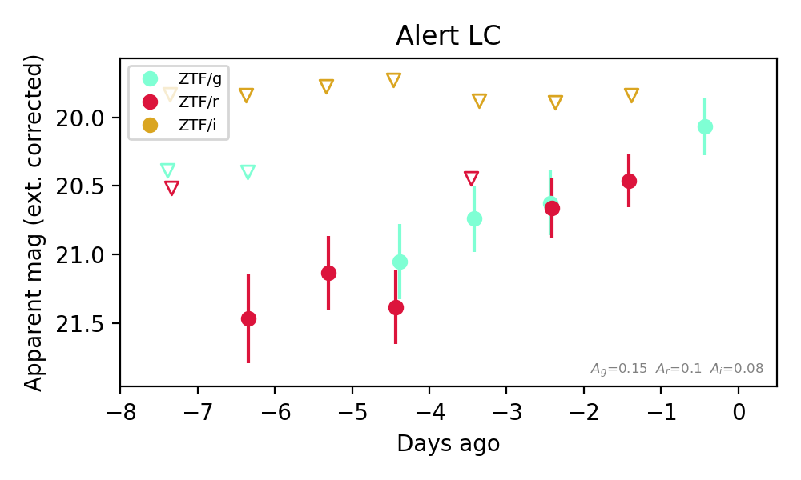
Extinction-corrected gr color:
From alerts: -0.04 +/- 0.32 mag
Extinction-corrected gi color:
From alerts: 0.73 +/- 99 mag
Extinction-corrected ri color:
From alerts: 0.62 +/- 99 mag
Consistent with synchrotron, g-r>0!
Rise Rate:
g: 0.24 mag/day
r: 0.21 mag/day
Fade Rate:
7. [ZTF] ZTF26abvpbtz (FBOT?) [Back to Top] [Share] [Trigger Swift] [Fritz Alert] [Fritz Source] [Lasair]RA, Dec: 2.17331, 10.36304 0h 8m41.59s, 10d21m46.95sGalactic (l, b): 106.04513, -51.10182 ext(g-r) = 0.088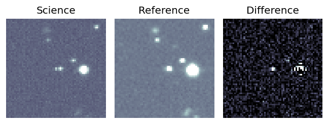
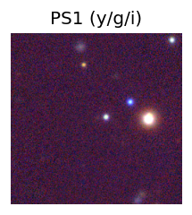
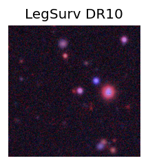
TESS: Sectors [42 43 70 83]
PS1: 0 sources in 3 arcsec
LegacySurvey: 1 sources in 3 arcsec Closest: d = 0.31 arcsec, 146.5 deg (east of north) photoz=1.04 (68% bounds 0.92, 1.17), type=REX peak abs mag (ext. corrected) = -24.92 (68% bounds -24.59, -25.24)
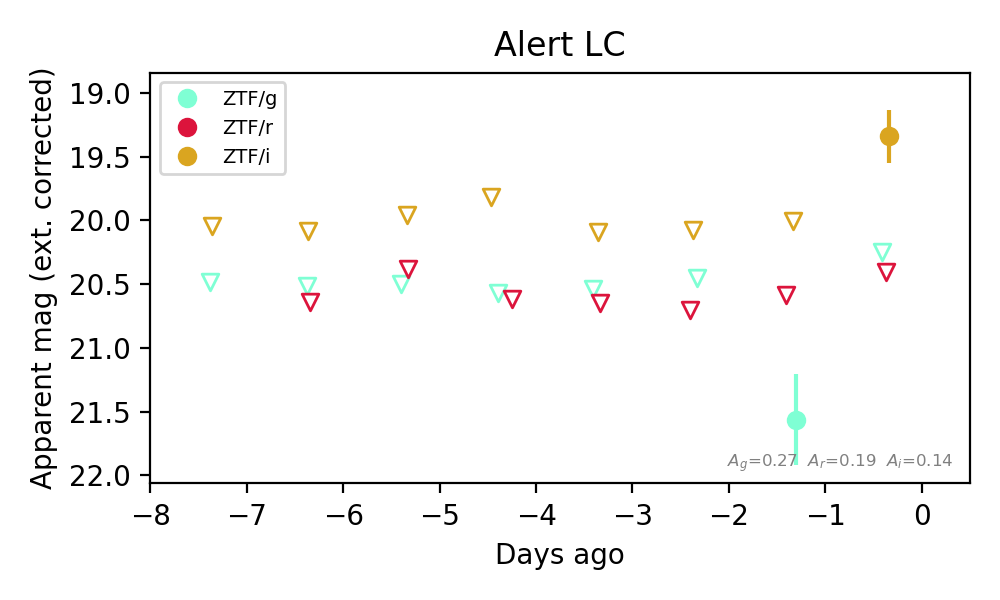
Extinction-corrected gr color:
From alerts: 0.97 +/- 99 mag
Extinction-corrected gi color:
From alerts: 0.91 +/- 99 mag
Extinction-corrected ri color:
From alerts: 1.06 +/- 99 mag
Rise Rate:
i: 0.67 mag/day
Fade Rate: